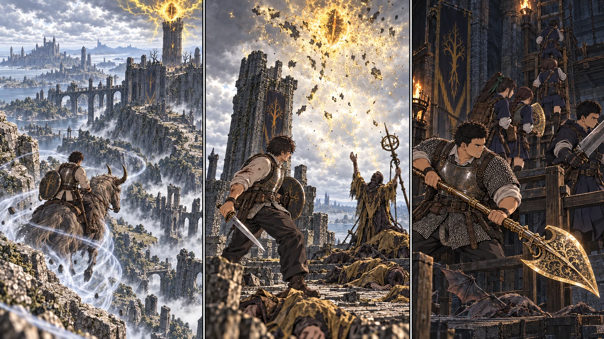

最新の本編へ消えた眼と、揃った割符。

【DAY45 朝｜昨日の続き】昨日引き返した場所に、今日は別の線が引かれている。先生はベイルム街道から昇降機の手前へ進み、南東へ折れた。塔の位置を知っていることと、そこへ近づけることは違う。岩の陰で黄色い光が弱まるのを待ち、次の陰まで移る。東の霊気流を確かめてから、トレントの脚を預けた。
【狂い火の塔｜先生】入口を抜ければ終わり、ではなかった。鼠の爪が石を擦る。狭いところへ三匹まとめて抱え込まず、盾の縁で最初の一匹を止め、剣を返す。二匹目が足元へ回った時、壁へ肩を打ちつけた。鈍い痛み。それでも、盾を下げずに残りを処理する。
梯子の先にいた者たちは、空へ向かって祈っていた。何を願っているのか、誰の命令なのか、先生には分からない。ただ、頭上に膨らむ光が、下を歩く者を焼くことは知っている。先生は剣を握り直した。塔上の六人を倒すと、黄色い眼がほどけた。音のない空を、長く見上げる余裕はなかった。
降りてから赤い聖杯瓶を一度使う。肩の痛みが引く。「止めた」。声に出すと、ようやく息が整った。周囲の敵まで消えたわけでも、この塔が皆の家になったわけでもない。それでも次に来る誰かは、あの眼を恐れて岩陰へ伏せなくてよい。今日は、先生が先に危険を引き受けられた。
【ファロス砦｜二隊】こちらは光のない入口だった。前日の赤い地面を避けて北側から接近し、遠い大竜には手を出さない。暗がりで羽音がした瞬間、花と千夏が狙いを絞った。二匹だけを落とす。他の影まで追えば、道具も体力もなくなる。
梯子を上る六人と、その足元を守る六人。大地の黄金の刃が入口へ向き、直人の大剣が隙間を埋める。蓮は箱から右の割符を取り出したが、その場で眺めなかった。「持った、戻る！」。味方が降り終わるまでが回収だった。十二人が揃って明るい外へ出て、敵影を切ってから、教会への帰還を選んだ。
【教会｜もう一つの完成】昼のうちに、開口部の一角へ腰ほどの石積みができていた。巨体の一撃を受け止める壁ではない。風を弱め、寝床へ土が流れ込むのを減らす壁だ。誠が手を離しても崩れず、美咲が内側に置いた布も飛ばなかった。「これなら、ちょっと家っぽい」。
【18:30｜二つの報告】先生は塔の印から黄色い線を消し、蓮は左の隣へ右の割符を置いた。直人が半円同士を寄せる。「まだ、動かしてはいません」。昇降機を使える道具が揃ったことと、全員を向こうへ運べることは別だ。今日は皆が帰った。それを数えてから、先生は次の地図を広げた。